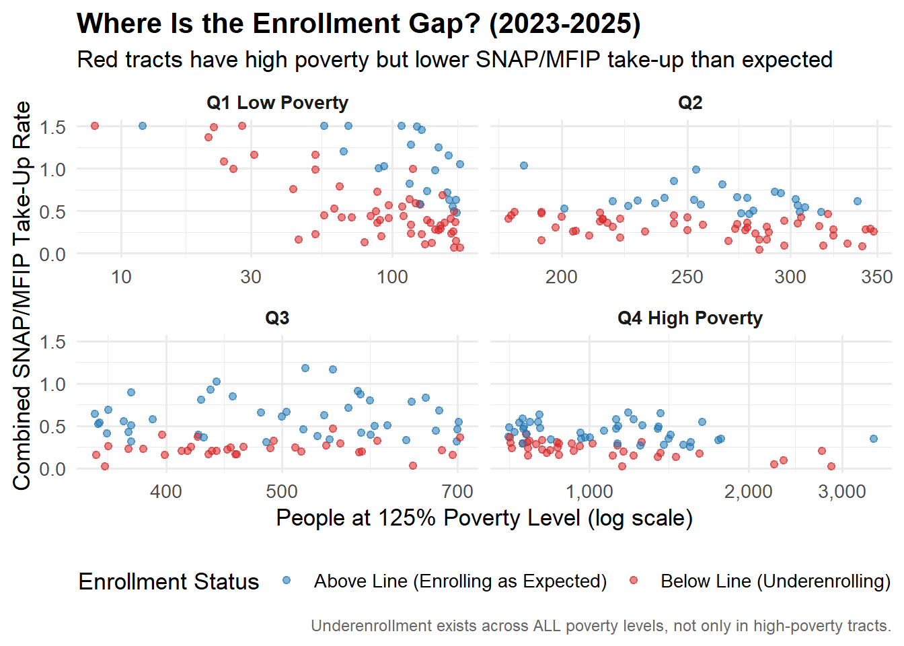

File: index.qmd
Portfolio: Data Visualization Portfolio — Reworked SNAP Enrollment Gap
Purpose: Reworked visualization showing where SNAP/MFIP enrollment gaps exist
across Hennepin County census tracts by poverty quartile (2023-2025)
Data: HennepinCounty_SNAP_MFIP_Estimates_Tract_RevA.csv (private)
Last updated: 2026-04-25
Overview
This is a reworked version of my earlier SNAP visualization. In the previous post, I looked at household size and children share across poverty quartiles — but those variables turned out not to be significant predictors of enrollment gaps. This visualization corrects that by asking a better question:
Which census tracts are enrolling fewer people than their poverty level predicts, and does this problem exist across all poverty levels or only in the poorest tracts?
Visualization
How to Read This Plot
The plot is split into four panels from left to right based on poverty level — Q1 is the least poor and Q4 is the most poor.
- X axis — the number of people living at or below 125% of the poverty line in that census tract (log scale so small and large tracts are both visible)
- Y axis — the combined SNAP and MFIP take-up rate. Higher means more eligible people are actually enrolling
- Dot color — red tracts are enrolling fewer people than a regression model predicts given their poverty level. Blue tracts are enrolling at or above expectations
- Panels — splitting by poverty quartile lets us see whether underenrollment is only a high-poverty problem or whether it shows up everywhere
What Changed From the Previous Version
In my earlier post (01_my-second-code) I visualized household size and children share across the same four poverty quartiles. However, those variables were tested in a regression model and found to be statistically insignificant (p = 0.770 and p = 0.539 respectively). This reworked version instead uses a regression-based enrollment gap to correctly identify which tracts are underenrolling relative to what their poverty level would predict.
Key Finding
Underenrollment is not just a high-poverty problem — red tracts appear in every quartile from Q1 to Q4. This means that even in neighborhoods with relatively low poverty, some tracts are still not enrolling as many people as expected. The problem is widespread across Hennepin County and cannot be solved by targeting only the poorest neighborhoods.